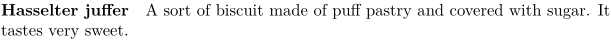
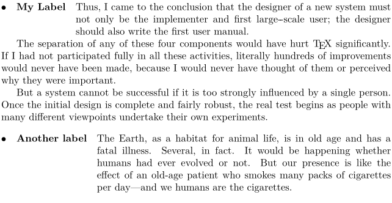

Contents
Summary
The command \definedescription is used to define description environments
Settings
| \definedescription[...][...][...=...,...] | |
| [...] | name |
| [...] | name |
| ...=...,... | inherits from \setupdescription |
Description
Define a new description with an associated style.
Examples
Example 1
-
\definedescription [concept] [alternative=serried, headstyle=bold, width=broad] \concept{Hasselter juffer} A sort of biscuit made of puff pastry and covered with sugar. It tastes very sweet. \par
yields
- 
Example 2
-
\definedescription[T] [headstyle=bold, width=fit, % Width of the running text indenting={yes,medium}, % (Internal) indenting of the running text text={\hbox to1.5em{$\bullet$}}, % Put in the front of each label hang=5, % Revert indenting after 5 lines ] \startTEXpage \startT{My Label} \input knuth \stopT \T{Another label} \input ward \stopTEXpage
Gives:
- 